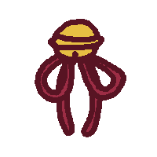
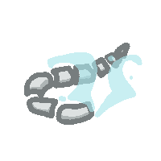

Solution: Virtual Family
Answer: HEX NUT
Written by Amon Ge
Identify the VTubers by:
Symbol: something they wear
Lines: shared illustrator (gold) or modeler (purple)
Patches: VTuber agencies
Taking the first letter of family names in reading order reads NIKOLI USING BIRTHDATES MOD FOUR.
Nikoli refers to the logic puzzle publisher. But what Nikoli puzzle? There is one symbol in the centre with a question mark. Using the connections, we can identify the shared illustrator as Amashiro Natsuki (with Kamiko, Gawr, Araka) and the shared modeler as Shirasawa Kazane (with Araka). There is only one VTuber that fits: Gokigen Naname, which also happens to be the name of a Nikoli logic puzzle.
Take the mod 4 birth dates of each VTuber to get givens for the Gokigen puzzle. After solving, read the letters on the longest path starting at Gokigen (and ending at the small red dot in the center) to get SIX SIDE FASTENER.
A six sided fastener that Gokigen might try eating is a HEX NUT, the answer.
We are shown a network of colorful patches, with drawn images in grey circles connected by gold and purple lines. The image also has a grid of letters and two rows of grey circles at the bottom.
The first clues are in the title (Virtual) and in the first line of letters (yuchuba). Yūchūbā is romanized Japanese for ユーチューバー, or “YouTuber”, and Virtual YouTubers (バーチャルユーチューバー, bācharu yūchūbā), or VTubers for short, are live streamers that use digital avatars first popularized in Japan.1
Indeed, each of grey circles contain symbols that uniquely identify a particular VTuber, and we need to identify all of the grey circles. These drawn symbols are always visible on the full VTuber model, and are often hair accessories or other worn items. Some distinctive break-ins are Omaru Polka’s jester hat, Mori Calliope’s scythe, and Usada Pekora’s carrot.
After some initial progress, we’ll need to use the additional information in the image to complete the identification. In particular, the colored backgrounds behind the VTubers and the lines connecting them have yet to be used. The background colors refer to different VTuber agencies, companies which represent and manage their talent. We might infer this from finding many Hololive VTubers with a light blue background. Later, we can also discover that VTubers with no colored background are independent (aren’t managed by an agency). The spotted patch of brown in the top-left behind Kamiko Kana refers to her former association with her agency, Tsunderia, before becoming independent.
The connecting lines will prove the most useful, and this is where the second half of the title (Family) comes in — if we consider this network to be a family graph, we can try to deduce the relationships between connected VTubers. In fact, VTubers often reference their “Mama” and “Papa” during their debut, referring to the artists — designer, illustrator, modeler, rigger — of their virtual character. The gold lines connecting VTubers represent a designer or illustrator, and the purple lines represent a modeler or rigger. This means connected VTubers in this family network are “siblings” who share a “mama” and/or “papa”.2 In the VTuber wiki, every VTuber has this familial info listed in their details. Searching for an artist in VTuber wiki is pretty reliable at finding the VTubers an artist designed/illustrated/modelled/rigged, and there are also specific pages that list all VTubers drawn by the same illustrator (e.g. Designed by Shigure Ui).3
These lines are also essential in breaking into other VTuber agencies — for instance, we can get from Hololive (light blue) to Nijisanji4 (green) from the siblings Inugami Korone and Shellin Burgundy, who share the designer/illustrator Fukahire, or the siblings Ookami Mio and Nishizono Chigusa, who share the designer/illustrator Izumi Sai.
Finally, there are two VTubers who are connected by a gold line that encircles themselves. These are Shigure Ui and Takehana Note, who illustrated Oozora Subaru and Ienaga Mugi respectively, and also illustrated their own VTuber avatar.
Once we identify enough VTubers, the 28 grey circles suggests we can read a message by taking a letter from each of the 28 VTubers in grey circles. If we take the first letter of each VTuber’s family name, which comes before the given name in the Japanese name order (e.g. Watson Amelia), we obtain the message NIKOLI USING BIRTHDATES MOD FOUR.
Nikoli refers to the logic puzzle publisher. But what Nikoli puzzle? There is one VTuber in the centre with a red circle and a question mark. Using the connections, we can identify the shared illustrator as Amashiro Natsuki (with Kamiko Kana, Gawr Gura, and Araka Luto) and the shared modeler as Shirasawa Kazane (with Araka Luto). There is only one VTuber that fits: Gokigen Naname, which also happens to be the name of a Nikoli logic puzzle.5
Gokigen Naname is a grid logic puzzle about drawing slanted lines. Given clues (from 0 to 4) indicate the number of edges leaving that vertex, and loops are not allowed. Now, we can take the mod 4 birth dates of each VTuber to obtain givens for the Gokigen puzzle.6 Here is an interface to solve the grid online. Note that we do need to use all the large circles as a given in the logic puzzle, including Gokigen Naname herself, or there is no unique solution.
See Appendix for the logic to solve the Gokigen puzzle. After solving the Gokigen, the remaining unused info are the letters, which happen to fall on the diagonal paths of the solution. Read the letters on the path starting at Gokigen and ending at the small red dot in the center7 to get the phrase SIX SIDE FASTENER.
A six-sided fastener that Gokigen Naname might try eating (she loves donuts) is a HEX NUT, the answer.
Author’s Notes
I had no choice but to write this puzzle after discovering Gokigen Naname. You had no choice but to solve a puzzle about VTubers. Welcome to the donut hole. If you liked this puzzle, I apologize for not including your oshi.8 If you disliked this puzzle, look on the bright side — thanks to me, VTubers won’t be puzzle source material for at least a year… or will it?
Here’s the very first mockup made for this puzzle:
-
Googling “yuchuba” also gets us a result on the VTuber Wiki, which will be an indispensable resource in the next step, all thanks to the ridiculously named VTuber Virtual Noja Loli Kitsunemusume Youtuber Ojisan. ↩
-
“Mama” often refers to designer/illustrator, and “Papa” often refers to modeler/rigger, matching the line colors, but this naming is not consistent across all VTubers — some refer to all of their artists as “mamas”. ↩
-
Outside of the VTuber Wiki, these two reddit posts are also very useful for identifying VTuber siblings across Hololive and Nijisanji. ↩
-
All Nijisanji VTubers have a canonical RGB color (listed on VTuber wiki), which are used for the line art for their images. This fact, while not necessary to solve this puzzle, can shortcut a lot of the ID. ↩
-
Nachoneko (Amashiro Natsuki) may be a tempting fit, but she would have a gold line encircling her as she is her own illustrator, like Shigure Ui and Takehana Note. ↩
-
I hope this step wasn’t too hard to find. Using other ways to assign givens (node degree, number of items on the character, birth months mod 4) quickly lead to contradictions around the edges. ↩
-
This is also the longest path in the solution starting from Gokigen Naname. ↩
-
Oshi is weeb for favorite VTuber. ↩
Appendix
Agencies:
| Color | Agency |
|---|---|
| blue | Hololive |
| green | Nijisanji |
| beige | Tsunderia |
| light purple | Prism Project |
| dark purple | Masquerade |
| pink | Kizuna Ai Inc. |
| white | Independent |
VTubers:
| # | VTuber | Agency | Shared Designer/Illustrator | Shared Modeler/Rigger |
|---|---|---|---|---|
| 0 | Nishizono Chigusa | Nijisanji | Izumi Sai | |
| 1 | Inukai Purin | Tsunderia | Rosuuri | |
| 3 | Kamiko Kana | Indie (formerly Tsunderia) | Amashiro Natsuki | |
| 2 | Omaru Polka | Hololive | ||
| 3 | Love-chan | Kizuna Ai Inc. | ||
| 1 | Inugami Korone | Hololive | Fukahire | |
| 2 | Uruha Rushia | Hololive | tou_ilie | |
| 2 | Shigure Ui | indie | Shigure Ui | rariemonn |
| 3 | Ienaga Mugi | Nijisanji | Takehana Note | |
| 0 | Ninomae Ina’nis | Hololive | rariemonn, Jujube | |
| 0 | Gawr Gura | Hololive | Amashiro Natsuki | |
| 2 | Boushiya Elle | Masquerade | Siraga | |
| 1 | Gokigen Naname | Indie | Amashiro Natsuki | Shirasawa Kazane |
| 0 | Ibuki Meno | PRISM Project | Siraga | |
| 3 | Rikka | Hololive | rariemonn, Yatsurugi | |
| 1 | Takehana Note | Indie | Takehana Note | |
| 2 | Hoshino Charlotte | Tsunderia | Rosuuri | |
| 2 | Debidebi Debiru | Nijisanji | ||
| 1 | Araka Luto | PRISM Project | Amashiro Natsuki | Shirasawa Kazane |
| 2 | Todoroki Kyoko | Nijisanji | Hojiro | |
| 0 | Elu the Elf | Nijisanji | Hojiro | |
| 2 | Shellin Burgundy | Nijisanji | Fukahire | |
| 0 | Mori Calliope | Hololive | Jujube | |
| 0 | Ookami Mio | Hololive | Izumi Sai | Yatsurugi |
| 2 | Nijisanji | Krau | Akatsuki Enma | |
| 1 | Fushimi Gaku | Nijisanji | Hojiro | |
| 2 | Oozora Subaru | Hololive | Shigure Ui | tou_ilie, Yatsurugi |
| 0 | Usada Pekora | Hololive | rariemonn, tou_ilie | |
| 1 | Reza Avanluna | Nijisanji | Krau | Akatsuki Enma |
Solution to the Gokigen logic puzzle:
-
Cells next to 0s and 2s on the edges of the grid can only be filled one way — 0s can’t have any diagonals connected to it, and 2s must have both diagonals connected. For example, row 1 column 1 (R1C1) must be a
/. -
The two adjacent 3s have two cells touching both 3s (R2C5 and R2C6). If these two cells faced different directions (like
/\or\/), then one of the 3s has two unconnected cells and can have at most two connected cells, which is a contradiction. Therefore, these two cells must face the same direction, giving each of the 3s one connection. This means all remaining cells from the 3s must give them each two more connections. So R1C5-R1C6 is\/, and R3C5-R3C6 is/\. -
Any 3s with one non-connected cell must have the remaining three cells connecting, and similarly for 2s with two non-connected cells and any 1s with three non-connected cells. Any 1s with one connected cell must have the remaining three cells not connecting. Using this completes the majority of the grid.
-
Prevent loops to complete the grid. R2C4 and R3C2 must be
\, and R4C2 must be/. Now R3C3 is\to finish the 2, and both R3C4 and R4C3 must be\to prevent a large loop in the path.